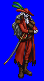
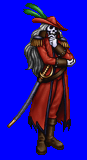
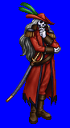
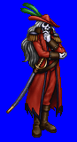

Height: 2 meters Weight: 200 lbs.
Habitat: Dungeon, Battlefield Origin: ???
Meaning: English "undead knight"
Undead knights are the spirits of cavalry units defeated in battle. Its reason for returning to life is unclear. It tracks its targets with eyes of pure hatred. Because it was a knight in life, its attack power and defenses are superior. In some legends, anyone killed by an undead knight returns to life as an undead servant itself.